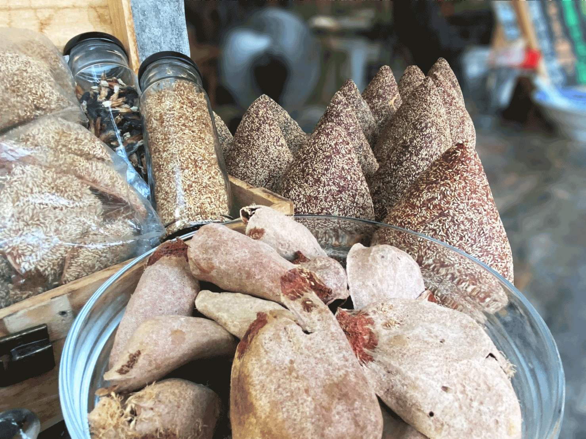
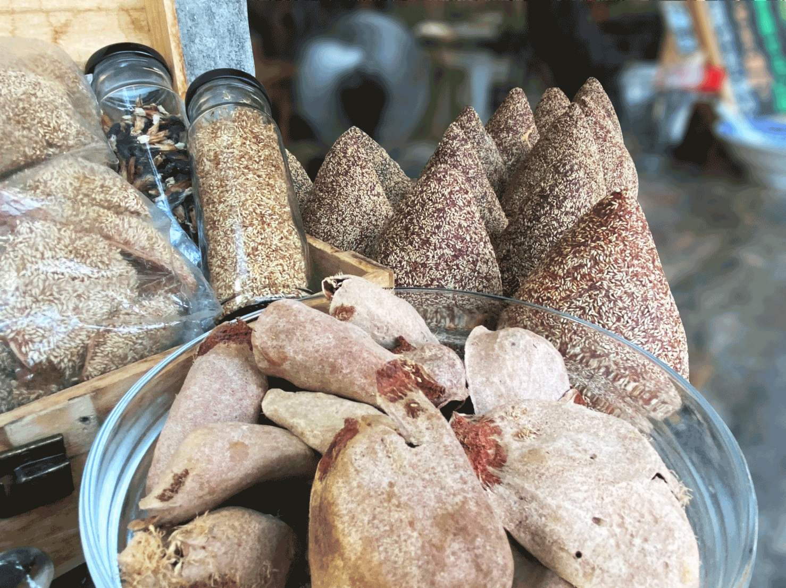

想尋寶嗎？來場審計新村的邂逅吧！
審計新村原為台灣省政府宿舍群，建築興建至今已逾五十載，近年來，配合市政府成為台中新 的創業基地與文創園區。
一進入審計新村，映入眼簾的是具有文藝氣息的建築房舍，每間店都有屬於自己的特色，甚至 有一些是網路上常常出沒的「網紅」店，著名的商店、景點，讓審計新村的名氣愈來愈大。
而今天我們要說的，並不是那些已經被大家熱烈討論過的店家，本篇邀請您，將視線聚焦到審計新村的另一大特色 — 集中在園區主幹道的流動攤商。
 
